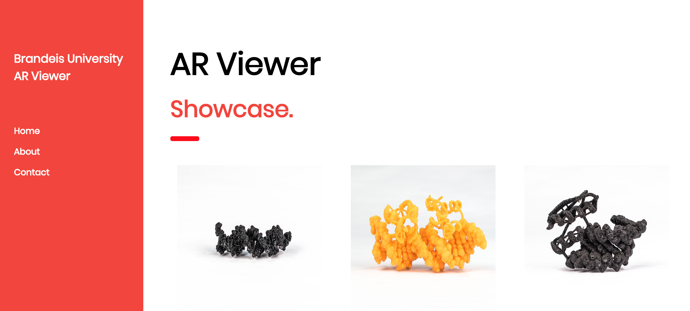

AR Viewer
At Brandeis University, we have a large database of 3D models of biomolecules for use in lectures and research labs. I wanted to showcase this work of the University in an interactive way to the patrons of Makerfaire at the school's exhibit. To view a model, users simply click on the picture of the molecule they would like to view. They will then be transported to that molecule's AR page that utilizes the laptop's camera. Here, the user can view the molecule in augmented reality using a provided QR code to observe the molecules from different angles and distances. At the university, students are able to checkout physical, 3D printed versions of these models for a better understanding of their structure and behavior. This application uses the A-frame and Three.js Javascript libraries.
Github Repository is located here.